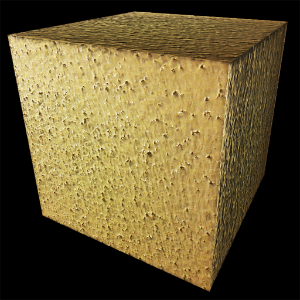

Textures |
 |
The stucco-textured box shown above was made with this statement:
box( texture=textures.stucco )
A collection of ready-to-use textures is provided; "textures.stucco" actually represents a character string giving the name of the image file. For the complete set of existing built-in textures, see the example program Textures.
You can optionally specify that only portions of the object should be textured. The following statement places the texture only on the right face of the box, leaving the rest of the box untextured:
box( color=color.green,
texture={'file':textures.stucco, 'place':'right'} )
Using images from other web sites: You can use an image from another web site as a texture by specifying its URL, if that web site is "CORS enabled" (CORS = Cross-Origin Resource Sharing). For example,
texture="https://s3.amazonaws.com/glowscript/textures/flower_texture.jpg"
will fetch an image consisting of a cactus flower. For technical reasons, if the image has a width or height that is not a power of 2 (that is, not 2, 4, 8, 16, 32, 64, 128, 256, 512, 1024, etc.), the image is stretched to the next larger width or height that is a power of 2.
There is
a CORS-enabled site, https://imgur.com, that has extensive galleries of freely usable images. When you see an image you want, right-click the image (Mac Ctrl-click), choose "Copy image address", and paste the address into your texture specification, bracketed by quotation marks. You can upload an image to i.imgur.com by clicking "New post". Apparently you have to register in order to be able to access your image as CORS-enabled.
VPython 7 and textures: If you are using VPython 7 you can use a texture on your own computer. The texture file must be in the same directory as your program file (in which case you would specify texture='T.jpg'), or in a subdirectory of that directory (for example, texture='images/T.jpg').
If you want your texture to be available to programs stored in different places, look at
...../ Lib/site-packages/vpython/vpython_data
There you will find the standard textures that are installed with VPython. Place a copy of your texture in this folder. In your VPython program, the following statements will display a box with your texture on it, depending on whether you use a Jupyter notebook or not:
Jupyter notebook:
box(texture='/nbextensions/vpython_data/T.jpg')
No notebook: box(texture='T.jpg')
There should be a change to VPython 7 to accept 'T.jpg" in either environment.
It should first look for the file where your program is located, and then in the vpython_data folder.
If you use "Share this program" in the GlowScript editor and copy code to a page on your own web site, you can fetch an image to use as a texture from the same web site, even if your web site isn't CORS-enabled.
Placing a texture on portions of the object: Placement options are 'left', 'right', 'sides' (all but the left and right ends), 'ends' (both left and right), and 'all' (the default). The meaning of left and right is that by default GlowScript objects have their axis in the (1,0,0) direction (+x), and the right end is on the right initially, before possible later changes of axis. In the case of a cylinder, 'sides' specifies the curving surface.
You can combine these options: 'place' : ['left', 'sides'] will place the texture on the left end and the sides.
Flipping and rotating: You can change the orientation of a texture on an object by specifying 'flipx' : True (reflect left <-> right),'flipy' : True(reflect up <-> down), 'turn' : N (rotate counterclockwise N 90-degree angles; if N is negative, the turning is clockwise). These transformations are applied in the order flipx, flipy, turn.
All the parameters for a texture are seen in the following example.
b = box( pos=vec(-1,2,0),
texture={'file':textures.stucco,
'bumpmap':bumpmaps.stucco,
'place':['right', 'sides'],
'flipx':True,
'flipy':True,
'turn':-3} )
Currently you have to give all the information in one package, as in the example above, rather than specifing an individual parameter such as texture.turn. You can retrieve this information as T = b.texture, which gives you the information in the form of a Python dictionary.
Color: Textures have their own colors, but if you specify a non-white color for a fully textured object, that color is mixed into the texture color, so that you can have for example green stucco. If only portions of the object are textured, the object color is not mixed with the texture color, and non-textured portions are shown with the specified object color.
Textures loaded: It takes time to load a texture from the specified file, so it may be important in your program to wait for all textures to be loaded before displaying the scene. The following sequence will achieve this effect:
scene.visible = False # show nothing yet
...create the objects
scene.waitfor("textures")
scene.visible = True
# show everything
First, make the scene invisible, create the objects (which won't be visible), then wait for all textures to have been loaded. Then make the scene visible, and you'll see the objects with their textures.This is the technique used in the example program Textures.
You can also check the status of an individual object B: the quantity B.ready is true if the texture has been loaded (or if B has no texture).
Textured objects are not displayed until the texture has been loaded. If you don't wait with scene.waitfor("textures"), you may see objects become visible in a random sequence, depending on when the various textures have been loaded.
Removing a texture: If you set texture=None, no texture is displayed.
Bump maps
Another option is to specify a "bump map". Bump maps make small distortions in a surface to give the illusion of a non-smooth surface. There are several kinds of bump maps, but the type of bump map currently supported in GlowScript is a "normals map", in which the normals (perpendiculars) to the surface, which affect the lighting of the surface, are varied across a surface in such a way that the surface no longer seems smooth. When you move the surface or the lights you will see an enhanced 3D effect. Bump maps can be produced from images by using computer tools made for this purpose, and a few bumpmaps have been provided in GlowScript. For example, bumpmaps.stucco is a normals map that enhances the 3D appearance of textures.stucco. Here is the statement that adds the built-in bump map to the built-in texture:
box(texture={'file':textures.stucco,
'bumpmap':bumpmaps.stucco})
The example program Bumpmaps lets you move the lighting around as well as rotate the object so that you can see the effects of adding a bumpmap.
The bump maps currently available are bumpmaps.gravel (to accompany textures.gravel), bumpmaps.rock (to accompany textures.rock), bumpmaps.stones (to accompany textures.stones), bumpmaps.stucco (to accompany textures.stucco), and bumpmaps.wood_old (to accompany textures.wood_old).